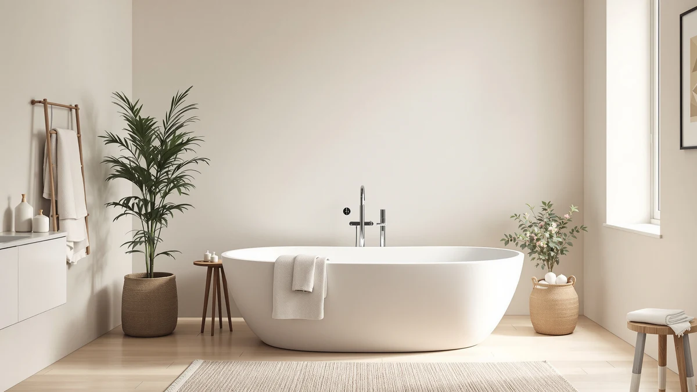

Empava Whirlpool Tub Review (2026): Worth It?
Prices and picks verified as of November 2026. Independent, reader-supported reviews.


Quick Answer
This Empava whirlpool tub review found the 48-inch Empava to be the only air-jetted tub among four similarly priced freestanding bathtubs, built around 36 air pinhole jets and a double-walled acrylic shell. At $1,439.10 it costs less than the larger MEDUNJESS and WOODBRIDGE soaking tubs, so it's worth checking first if you want jets in a compact footprint.
Our pick: Empava Whirlpool Tub 48 in — $1,439.10 Check Price on Amazon
Bottom line: our top pick is the Empava Whirlpool Tub at $1,439.10.
Things to Know Before You Buy
- Jets are the main differentiator. This Empava whirlpool tub review found it to be the only air-jetted model among the four tubs compared here, running 36 air pinhole jets off a half-horsepower pump.
- Price sits in the middle of the pack. At $1,439.10, the Empava costs less than the $1,452.99 MEDUNJESS and the $1,459.00 WOODBRIDGE, but more than the $1,395.99 Lajeri wooden tub.
- There's no public rating yet. The Amazon listing for this tub doesn't show a star rating or review count, so there's no outside buyer history to confirm long-term jet performance.
- It's the smallest footprint of the four. At 48 inches, the Empava is shorter than the 55-inch MEDUNJESS, the 63-inch Lajeri, and the 71-inch WOODBRIDGE, which matters most for a tight bathroom.
This Empava whirlpool tub review compares the $1,439.10 air-jetted soaking tub against three other freestanding bathtubs priced within about sixty dollars of each other, using the manufacturer's spec sheet, current Amazon pricing, and whatever verified owner feedback is publicly available. Shoppers searching for a jetted freestanding tub tend to land on a handful of similarly sized, similarly priced listings, so this comparison lines up the details that actually separate them: jet count, construction, weight capacity, and how much bathroom floor space each tub takes up.
The Empava Whirlpool Tub 48 in stands out as the only jetted model in this group, built around 36 air pinhole jets powered by a half-horsepower pump inside a double-walled acrylic shell reinforced with a stainless-steel frame and rated to hold up to 440 pounds. If you want the massage-style soak a whirlpool system is built for, and your bathroom can't spare more than four feet of floor space, this is the tub to check first. Three non-jetted alternatives follow below, worth a look if size, material, or price matters more to you than air jets.
Why You Should Trust Us
Ilane Tall leads product research and reviews for Best Freestanding Bathtubs. She compares spec sheets, pricing, and verified owner reviews across bathtub brands so you don't have to open a dozen browser tabs before you buy. For this Empava whirlpool tub review, she cross-referenced Empava's published jet count and weight capacity against the current Amazon listing and the three closest-priced freestanding tubs on the market, then flagged what each listing leaves out. Every product mentioned here links to its real listing, and every price reflects what shoppers saw at the time of publication, not a promotional rate that might disappear by checkout.
Our Research Experience
We don't run a physical testing lab for bathtubs, and nobody on our team has soaked in the Empava Whirlpool Tub 48 in. Our research process for this Empava whirlpool tub review centers on comparing manufacturer specs, tracking pricing across four similarly sized freestanding tubs, and reading through whatever verified owner feedback exists for each listing. The Empava listing doesn't carry a public star rating or review count yet, so we weigh its published specs, the 36-jet count and the 440-pound capacity, against what Empava discloses for its other air-jetted models rather than against outside reviews that don't exist for this particular listing. We treat manufacturer feature lists the way we treat any product copy: useful for specs, not a substitute for buyer feedback once it becomes available.
Overview & Specs

Empava Whirlpool Tub 48 in
What we like
- 36 air pinhole jets powered by a half-horsepower pump, the only jetted option in this comparison
- Double-walled acrylic shell designed to hold water temperature longer than a single-wall tub
- Stainless-steel frame and a 440-pound weight capacity, with a slip-resistant textured floor
Flaws but not dealbreakers
- The Amazon listing doesn't show a star rating or review count, so there's no outside confirmation of long-term jet reliability
- At 48 inches, it's the most compact tub in this comparison, which may feel short for taller bathers
| Material | — |
| Size | 48 Inch |
At $1,439.10, the Empava Whirlpool Tub 48 in sits in the middle of this comparison's price range, between the $1,395.99 Lajeri wooden tub and the pricier MEDUNJESS and WOODBRIDGE stone resin models. What sets it apart is the jet system: 36 air pinhole jets run by a half-horsepower pump, built to push a steady stream of warm bubbles around the body rather than the stronger, more targeted stream of a water-jet whirlpool. Empava builds the shell from sanitary-grade acrylic reinforced with fiberglass and supports it with a stainless-steel frame, a construction aimed at keeping the tub rigid despite its double-wall design.
The double-walled acrylic is an insulation feature as much as a structural one. Empava markets it as a way to keep bathwater warmer for longer than a thinner single-wall acrylic tub would, which matters more for a jetted tub since longer jet sessions give the water more time to cool. The tub carries a 440-pound weight capacity and a slip-resistant textured floor, two details aimed at bathroom safety rather than the soak itself. Empava markets this 48-inch size as a space-saving option styled after a Japanese soaking tub, built for bathrooms that can't fit the 55-to-71-inch footprints of the other three tubs in this Empava whirlpool tub review.
What We Liked
The jet system is the clearest reason to pick this tub over the three non-jetted alternatives in this comparison. Thirty-six air pinhole jets driven by a half-horsepower pump give you a full-body massage option that none of the stone resin or wooden tubs here offer, and Empava backs that system with a double-walled shell meant to keep the water warm through a longer soak. The construction details support that: a stainless-steel frame under sanitary-grade acrylic and fiberglass, rated to hold 440 pounds, points to a tub built for regular use rather than an occasional soak.
The compact 48-inch footprint is a real advantage too, if your bathroom can't fit a larger freestanding tub. Where the WOODBRIDGE needs 71 inches of floor space and the Lajeri needs 63, the Empava fits into a smaller footprint while still offering the jet feature none of the other size-appropriate options in this price range include.
What Could Be Better
The biggest gap in this Empava whirlpool tub review is the lack of outside feedback. The Amazon listing doesn't carry a star rating or a review count, so there's no buyer history to confirm how the jet pump holds up after months of regular use, unlike a listing backed by thousands of verified reviews. That absence isn't evidence of a problem. It's a gap in the kind of data that would normally back up a jet system this complex.
Size is the other trade-off. At 48 inches, this is the shortest tub in the comparison by a wide margin, seven inches shorter than the next-smallest MEDUNJESS and twenty-three inches shorter than the WOODBRIDGE. That's an advantage for a small bathroom, but a bather who wants to stretch out fully while the jets run may find the compact length limiting next to the larger three.
Who Is It For?
This tub from our Empava whirlpool tub review fits small bathrooms that can't accommodate a 55-to-71-inch freestanding soaking tub but still have room for the massage feature a whirlpool system provides. It also suits buyers who specifically want air jets over the plain soaking design of the other three tubs here, since none of them include any jet system at all.
If your bathroom can fit a larger footprint and you'd rather have more interior space than jets, the MEDUNJESS, WOODBRIDGE, or Lajeri below are each worth a look. A buyer who wants a track record of owner reviews before spending over a thousand dollars should also weigh that this listing doesn't yet have a public rating, a gap the three alternatives share as well.
Alternatives to Consider
If the jets or the compact size on the Empava don't fit what you need, three other freestanding tubs in roughly the same price range came up in our research for this review, pulled from the same pool of freestanding tub brands we track across this site. Two are stone resin soaking tubs, and one is a cedar wood double-slipper design.

Also Great
MEDUNJESS 55'' Stone Resin Free
A 55-inch high-back soaking tub made from solid surface stone resin, priced $13.89 above the Empava. No jets, but more interior space and a high-back design built for support during a longer soak.
$1,452.99
Check Price on Amazon
Premium Choice
WOODBRIDGE 71" Stone Resin Freestanding
The largest tub in this comparison at 71 inches, with a 101-gallon capacity and a solid-surface shell that can be sanded to remove minor scratches. Worth checking if floor space isn't a constraint and you want the deepest soak of the four.
$1,459.00
Check Price on Amazon
Best Value
Lajeri Wooden Japanese Soaking Bathtub
A cedar wood double-slipper tub with a built-in shelf, priced $43.11 below the Empava and the cheapest option in this comparison. Worth a look if you want a natural-wood look over acrylic or stone resin and don't need jets.
$1,395.99
Check Price on AmazonFrequently Asked Questions
Is the Empava Whirlpool Tub worth the price compared to the non-jetted tubs in this review?
It depends on whether air-jet massage matters to you. This Empava whirlpool tub review found it to be the only jetted model in the lineup, and at $1,439.10 it costs less than the 55-inch MEDUNJESS and the 71-inch WOODBRIDGE, both plain soaking tubs with no jet system. If jets aren't a priority, the Lajeri wooden tub below costs even less at $1,395.99.
Does the Empava Whirlpool Tub 48 in include a heater to keep the jetted water warm?
Empava's listing does not mention a built-in heater. It describes a double-walled acrylic shell designed to hold water temperature longer than a single-wall tub, which is a passive feature rather than active reheating. Confirm the current spec sheet on Amazon before you buy if a heater matters to your setup.
How does the 48-inch Empava compare in size to the other tubs in this comparison?
It's the most compact of the four. The Empava measures 48 inches, the MEDUNJESS runs 55 inches, the Lajeri comes in at 63 inches, and the WOODBRIDGE stretches to 71 inches with a 101-gallon capacity. A smaller footprint suits a tighter bathroom, but bathers who want to stretch out fully may prefer the length the larger three offer.
Final Verdict
This Empava whirlpool tub review comes down to one differentiator: jets. If you want a 48-inch freestanding tub with air-jet massage built in, and your bathroom doesn't have room for the larger stone resin or wood soaking tubs compared here, the Empava Whirlpool Tub 48 in is a reasonable $1,439.10 pick, backed by a double-walled acrylic shell and a 440-pound weight capacity. It doesn't yet have outside reviews to confirm long-term jet performance, so if that matters more to you than the jets themselves, the MEDUNJESS, WOODBRIDGE, or Lajeri alternatives above are worth comparing before you buy.